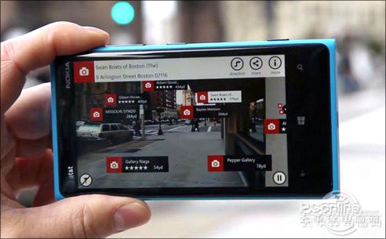
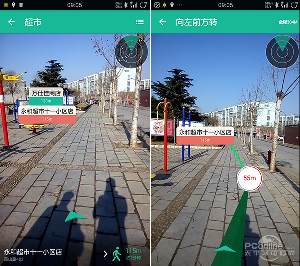

随便走——路痴的福音
记得几年前，曾经在国外网站上见过这样一组视频。一个人走在一条陌生的街道上，满眼的迷惑。忽然她掏出手机打开一款软件，Duang，什么商场名称、客房价格、试用评价，一下子全都显示到屏幕上来了。当然，类似的应用目前在国内仍然不太好用，最主要是信息偏少。但我们仍然可以借助一款名为“随便走”的APP提前感受一下。

这是一款名为“城市万花筒”的APP，但在国内其提供的信息却很有限。
“随便走”是一款地图导航软件，和普通地图最大一个不同是，它的地图不是显示在屏幕上，而是直接“画”在了实景中。使用时软件会首先询问你要搜索的地点类型（如商场、超市、厕所等），然后就会把搜索结果直接显示在实景上。当然这个实景显示仅仅是一个开始，点击地点后的导航过程也是全程实景模式。于是传统繁琐的地图导航，一瞬间变得直观起来，这或许就是“随便走”带给我们的最大变化。

“随便走”的AR实景导航
当然从目前情况来看，“随便走”提供的信息还不够丰富，全程在线导航也是一个不小的障碍，但其提供的创新体验仍然值得称赞。
AR-interesting，an interesting web
copyright 2016 By Interesting Working Group
Most contents above (photos included) are derived from the Internet.